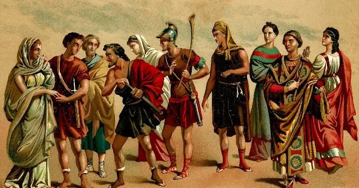
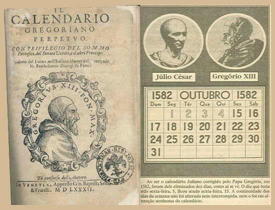
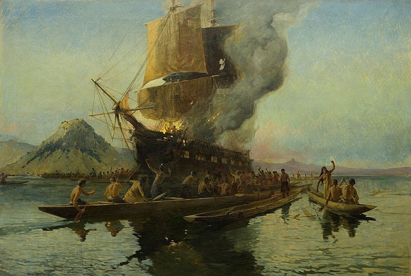

Historia:
National Geographic
Las drogas, comida divina de Mesoamérica
Los antiguos americanos ingerían hongos y plantas alucinógenas para comunicarse con los dioses.

Amos y esclavos en la antigua Roma: el amor fuera del matrimonio
Las relaciones sentimentales entre los esclavos y sus dueños fueron algo bastante frecuente en la antigua Roma. Tanto hombres como mujeres mantuvieron este tipo de amoríos con sus siervos, aunque en el caso femenino debía hacerse con absoluta discreción, puesto que estaba considerada una relación infamante.
La introducción del calendario gregoriano
1582, el año en el que octubre duró 21 días En octubre de 1582, el papa Gregorio XIII introdujo un nuevo calendario que tomó su nombre de él: el gregoriano. Este corregía un ligero desfase del calendario juliano, en vigor desde el año 46 a.C., y es el que se utiliza hoy en día en gran parte del mundo.
La masacre del "Boyd": muerte y canibalismo en los mares del Sur
Este terrible acontecimiento ha pasado a la historia por ser uno de los actos de muerte y canibalismo más sangrientos llevados a cabo por una tribu de maoríes en los mares del Sur. Unas setenta personas, entre pasajeros y tripulantes del "Boyd", un bergantín británico, fueron asesinadas, y algunas devoradas, en Whangaroa (Nueva Zelanda) por un grupo de maoríes como venganza por la paliza que había recibido a bordo el hijo del jefe de la población. Clica para seguir leyendo
Frente del Este
El sitio de Sebastopol durante la Segunda Guerra Mundial La tenaz resistencia de los rusos en esta importante base naval tuvo en jaque a los nazis durante ocho meses de duro asedio. Bombardeos y ofensivas por parte de ambos bandos marcaron la contienda, que al fin se saldó con una victoria para Hitler. Clica para seguir leyendo